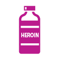
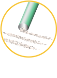
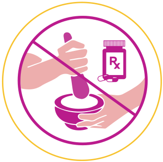
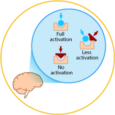
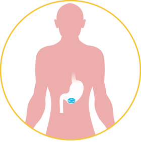
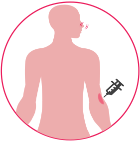
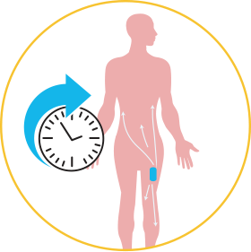
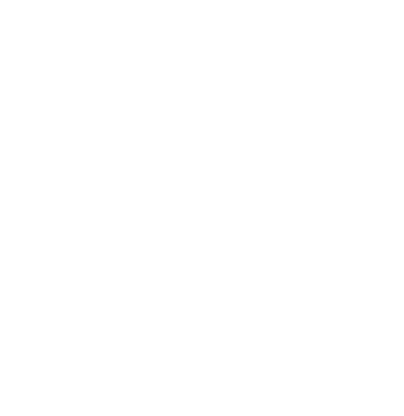

In the early 1900s, the community group, Saint James Society in the U.S., began a campaign to supply free samples of heroin through the mail to morphine addicts who were trying to give up their habits.11
In 1909, Congress passed the Opium Exclusion Act barring importation of opium for the purposes of smoking.12 The Opium Exclusion Act has been considered the opening shot in the U.S. war on drugs.13
In a similar manner, the Harrison Narcotics Tax Act of 1914 placed a nominal tax and required physician and pharmacist registration for the distribution of opiates, but served as a de facto prohibition of the drugs.14, 15 That same year, Kennedy Foster wrote, in New York Medical Journal, “...morphinism is a disease, in the majority of cases, initiated, sustained and left uncured by members of the medical profession.”16
In 1916, a few years after Bayer stopped the mass production of heroin due to hazardous use and dependence, German scientists at the University of Frankfurt first synthesized oxycodone with the hope that it would retain the analgesic effects of morphine and heroin with less dependence.17
With an increase in prescription drug abuse, pharmaceutical manufacturers and the FDA have responded with product formulations that contain abuse-deterrent properties, as well as remote monitoring programs.
The following are routes of misuse and abuse seen today:

In April 2015, the US Food and Drug Administration issued final guidance to assist the pharmaceutical industry in developing opioid drug products with potentially abuse-deterrent properties.1
As a general framework, the FDA has
categorized abuse-deterrent properties as
follows*:
Physical barriers can prevent chewing, crushing, cutting, grating, or grinding. Chemical barriers can resist extraction of the opioid using common solvents like water, alcohol, or other organic solvents. Physical and chemical barriers can change the physical form of an oral drug rendering it less amenable to abuse.

An opioid antagonist can be added to interfere with, reduce, or defeat the euphoria associated with abuse. The antagonist can be sequestered and released only upon manipulation of the product. For example, a drug product may be formulated such that the substance that acts as an antagonist is not clinically active when the product is swallowed but becomes active if the product is crushed and injected or snorted.

A product that lacks opioid activity until transformed in the gastrointestinal tract can be unattractive for intravenous injection or intranasal routes of abuse.

Substances can be combined to produce an unpleasant effect if the dosage form is manipulated prior to ingestion or a higher dosage than directed is used.

(including depot injectable formulations and implants) - Certain drug release designs or the method of drug delivery can offer resistance to abuse. For example, a sustained-release depot injectable formulation that is administered intramuscularly or a subcutaneous implant can be more difficult to manipulate.



